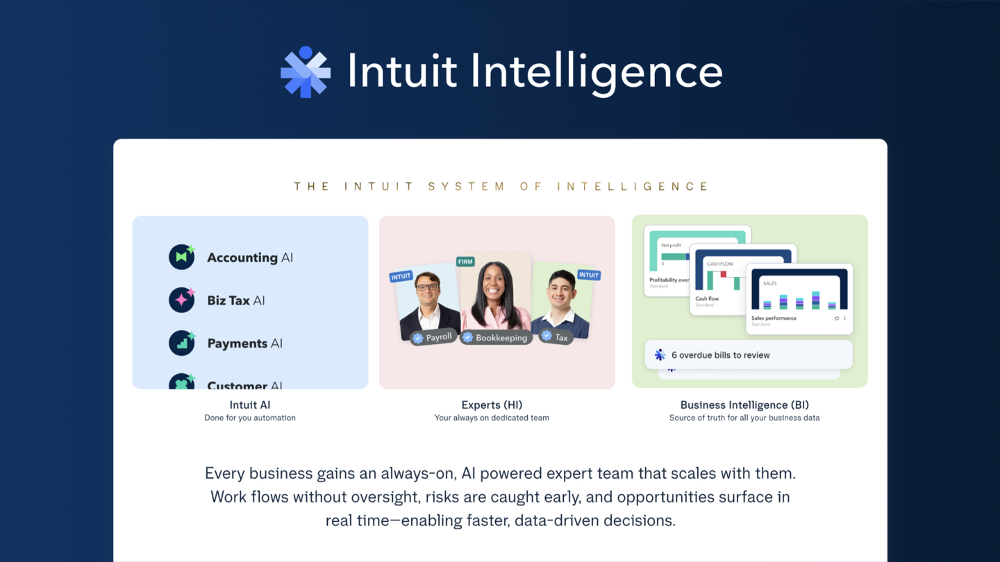
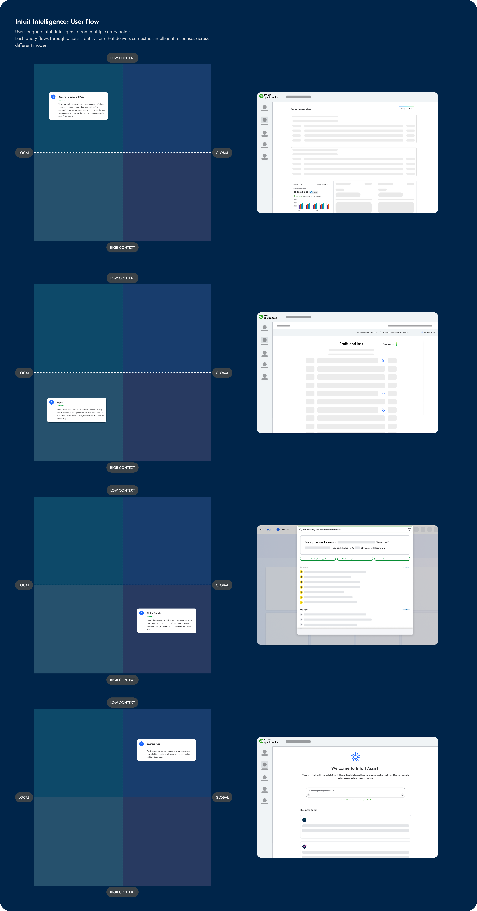
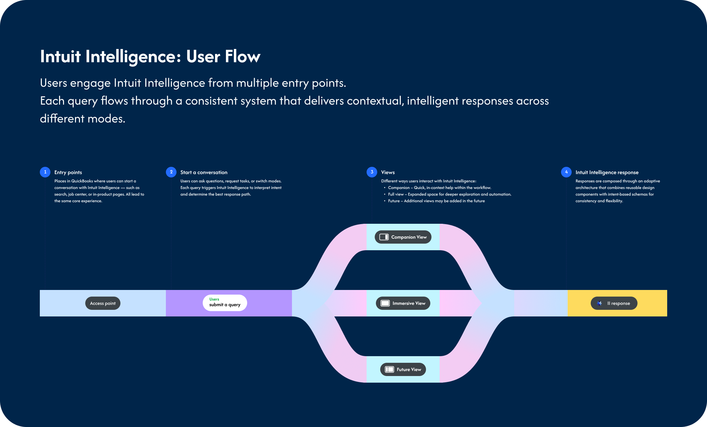
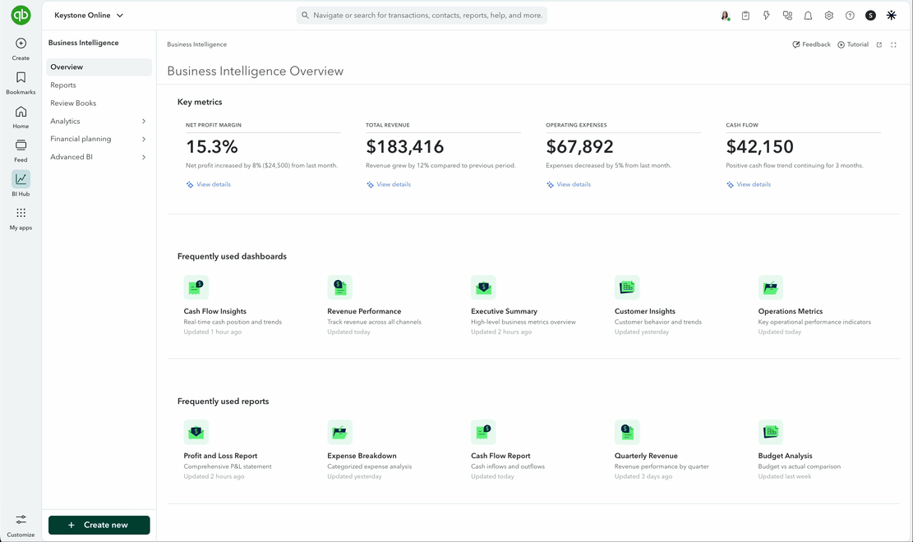
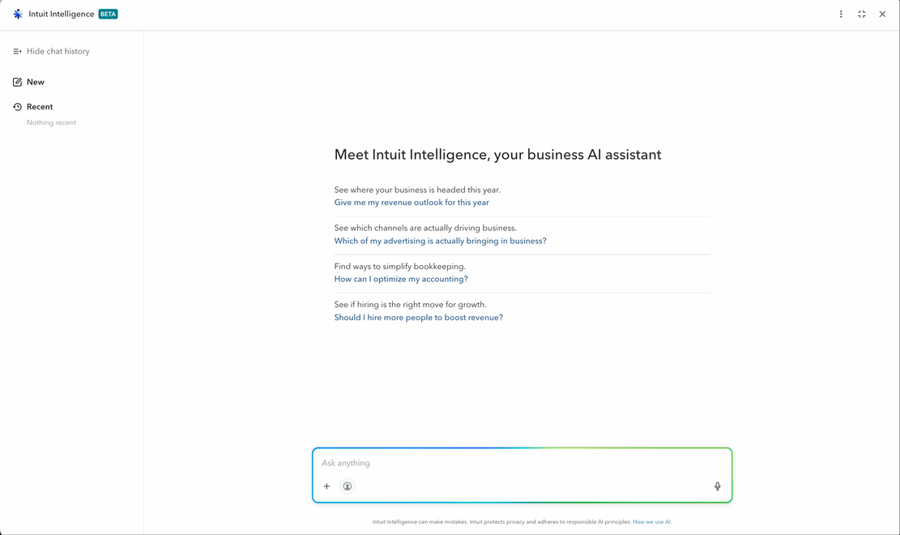
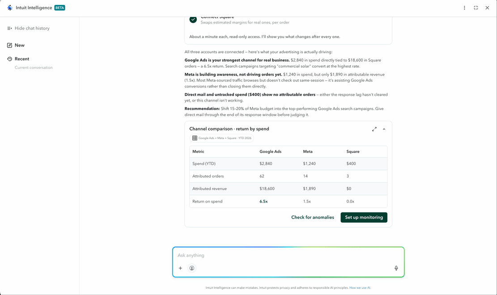
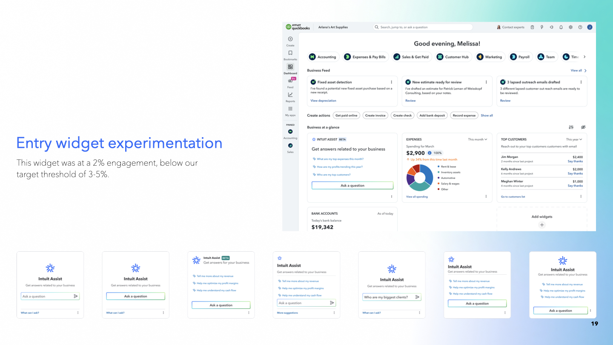
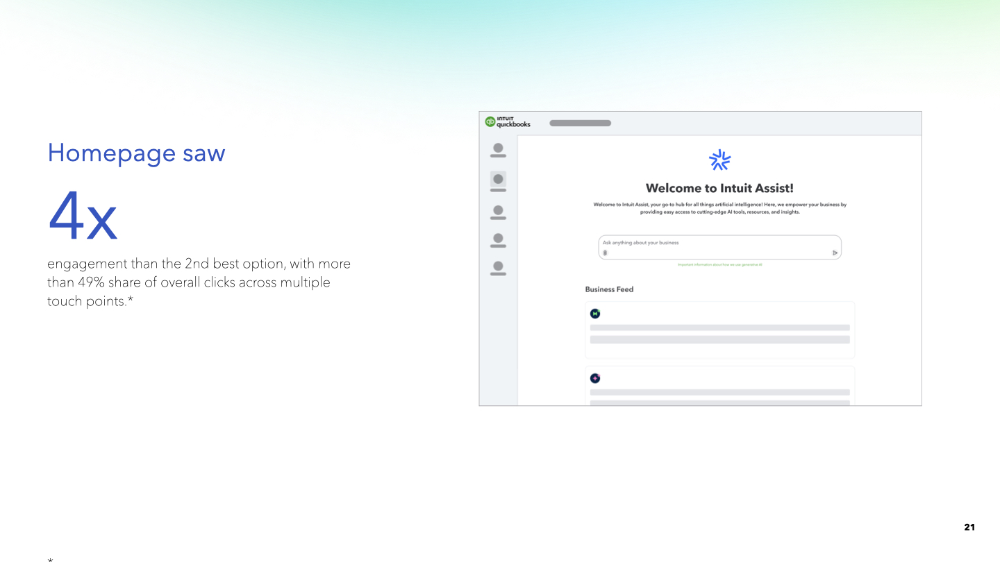
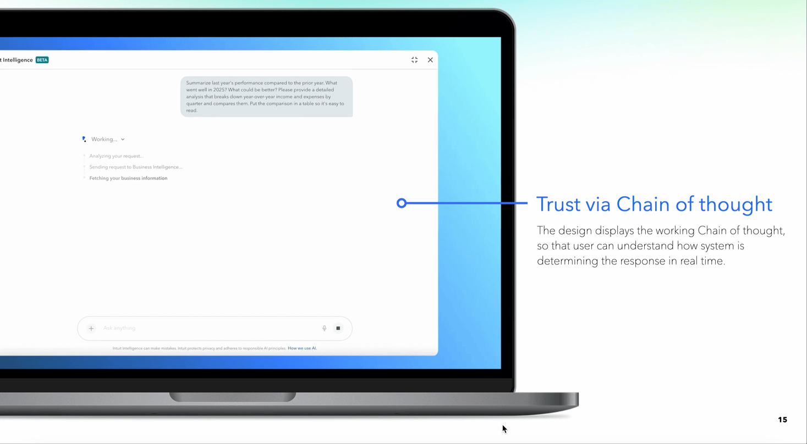
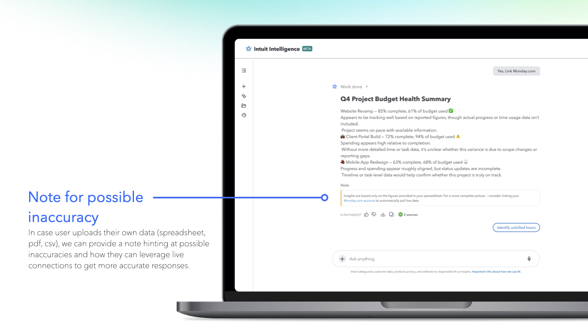

Project Clarity
Customers were already turning to tools like ChatGPT to make sense of their QuickBooks data — without the privacy or security their business actually needs. Project Clarity is Intuit Intelligence: a secure, conversational AI platform built directly into QuickBooks that lets a customer explore open-ended business questions and get accurate answers, without building a dashboard or wrangling a spreadsheet.

Analysis paralysis. The sheer volume of data and reports sitting inside QuickBooks is overwhelming — customers struggle to find timely, actionable insight for a strategic decision buried somewhere in profit and loss, cash flow, taxes, or expenses.
Data security. Customers were already solving this the wrong way — dropping business data into public AI tools like ChatGPT for quick analysis — which meant they were already primed for the behavior, but doing it somewhere that couldn't guarantee the privacy or security their financial data actually needs.
Intuit Intelligence is the answer to both: a secure, conversational AI platform, purpose-built for open-ended business analysis, that lets a customer ask a real question and get a real answer without ever leaving QuickBooks.
I led design for the desktop experience within the Business Intelligence team, alongside a senior product designer, two PMs, multiple engineering teams, a UX researcher, and a content designer — partnered closely with the QB and Intuit Design System design-systems teams and a wide set of cross-functional stakeholders.
The project has been running since Q4 FY2025 (July 2025–present) and is still ongoing. Phase 1 rolled out in November 2025, with subsequent phases following as the surface expanded — my own involvement centered on QB Web and IES Web, alongside parallel work on QB iOS and Android.
The design started with the entry points, not the chat window. Customers needed to be able to reach Intuit Intelligence from wherever they already were — a report they were staring at, a global search, or a dedicated feed — and have the system carry over exactly how much context that starting point implied.
Each entry point sits somewhere on a local-to-global, low-to-high-context spectrum: a question asked from inside a specific Profit and Loss report carries far more built-in context than one asked from a global search bar, and the experience needed to feel intelligent about that difference rather than treating every query identically.

Mapping every entry point across two axes — local vs. global, and how much context the surrounding page already implies.

Underneath every entry point, the same architecture: a query is interpreted once, then rendered through whichever view fits the moment — composed from reusable design components rather than one-off screens.
Once a conversation starts, it lands in one of three views, chosen for how much room the moment actually needs — a quick lookup shouldn't take over the screen, and a multi-step analysis shouldn't be squeezed into a sidebar.

Companion View — quick, in-context help that sits alongside whatever the customer is already doing, for a question that doesn't need the whole screen.

Immersive View — a dedicated, full-screen conversation for deeper exploration, when a question is going to take more than one back-and-forth to answer.

Canvas View — a working surface for multi-step, structured analysis: tables, comparisons, and follow-up actions, for questions that outgrow a chat bubble.
Not every entry point performed the way we expected, so we treated placement as something to test rather than assume. An early home-screen widget experiment landed at roughly 2% engagement, well below our 3–5% target — a clear signal that the location and framing weren't yet earning attention on a page already competing for it.

Entry widget experimentation — this version landed at 2% engagement, below our 3–5% target threshold.

The entry point that won: 4x the engagement of the 2nd-best option, with more than 49% share of overall clicks across every touchpoint we tested.
Handing an AI system open-ended access to someone's financial data only works if the customer trusts what comes back — and research made clear how thin that trust is. One QBO user put it bluntly: if the system is used once and doesn't hold up, trust doesn't degrade gracefully, it collapses.
"If we use something and don't find reliability, trust is deeply undermined." — Brian, QBO user
We designed trust into the response itself, rather than treating it as a disclaimer bolted on afterward. The interface shows its working chain of thought in real time, so a customer can see how the system is reasoning toward an answer, not just receive the answer. Every response also surfaces the underlying sources it drew on — QuickBooks data, linked bank feeds, even relevant web sources — so a customer can verify exactly where a number came from instead of taking it on faith.
And when the ground truth is thinner — for example, when a customer uploads their own spreadsheet, PDF, or CSV instead of connecting live data — the system says so directly, flagging where its confidence is lower and suggesting a live connection for a more accurate answer next time.

Trust via chain of thought — showing the reasoning in real time, not just the final answer.

A proactive accuracy note — when an answer leans on uploaded, static data rather than a live connection, the system says so and offers a fix.
Intuit Intelligence is live across 4.4 million companies, handling 10,000 questions a day and more than 200,000 total — and the reception from early users has matched the scale.
"Of all the features that I've ever seen and ever demoed, this is the most impressive on a first beta launch. I will put that on record." — Jason, QBO user